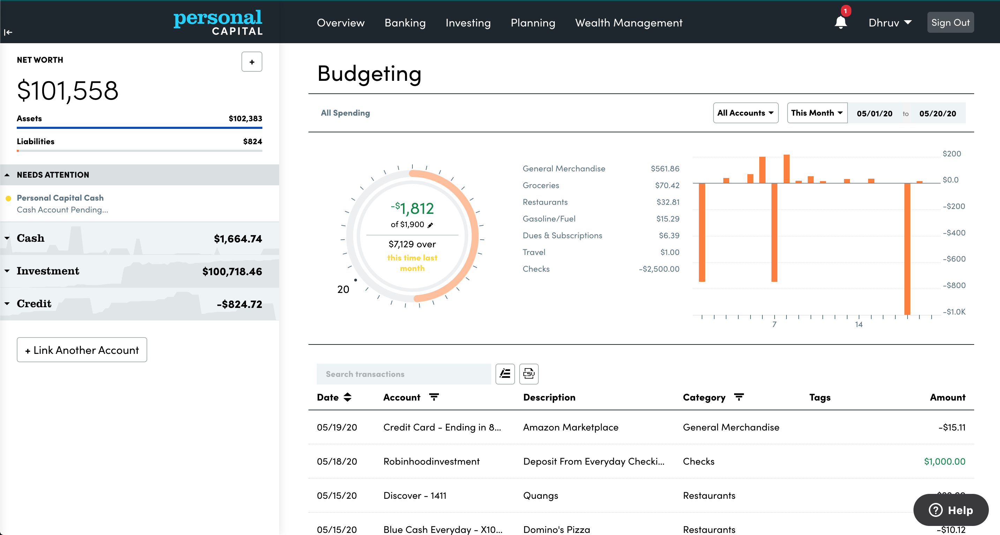
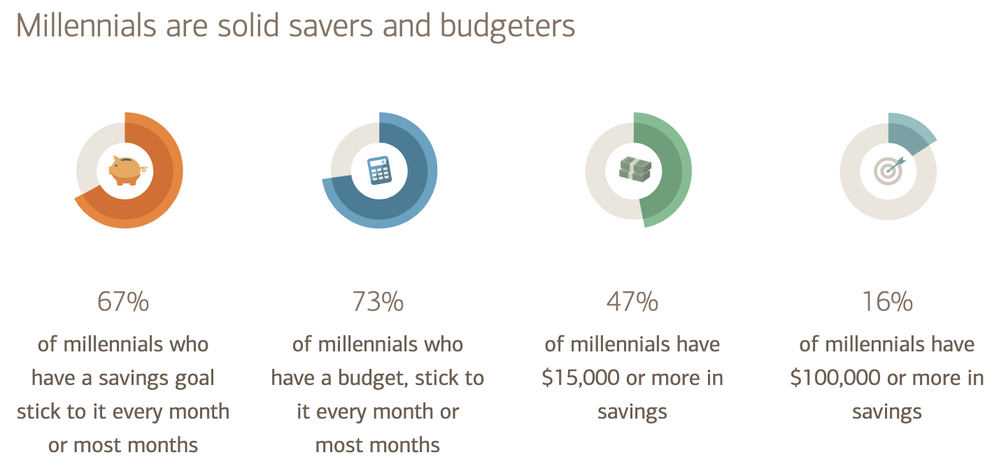
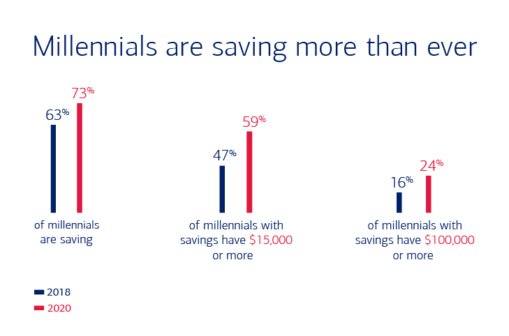
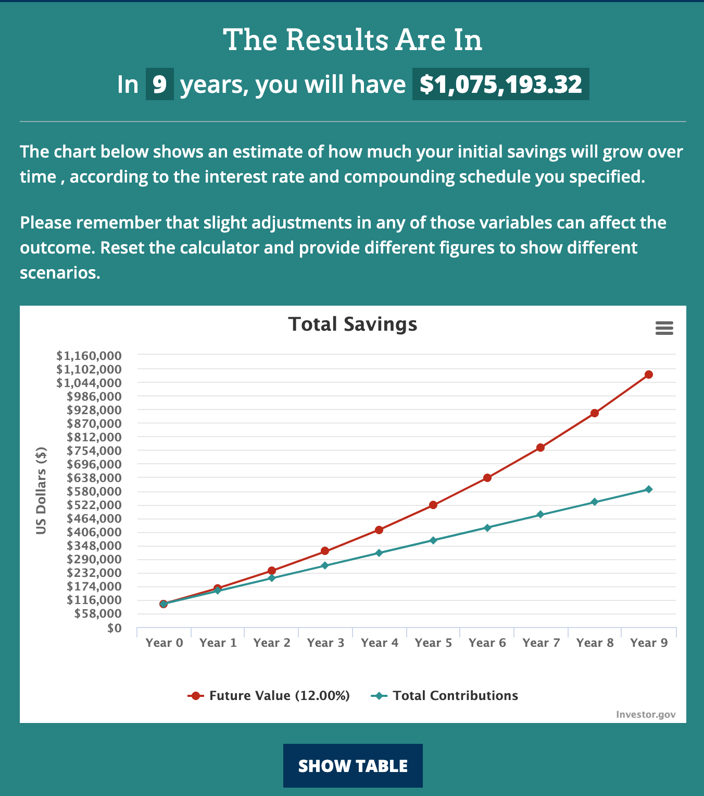

Inspiration
Charlie Munger is one of the most influential investors of our time(mostly my Dad’s time). I do not always
agree with the his or Warren Buffett’s investment strategies but they have had great deal of influence on my life, specially on saving
money part. Below is a quote from a book by Janet Lowe on Charlie Munger.
Damn Right: Behind the Scenes with Berkshire Hathaway Billionaire Charlie Munger - by Janet Lowe


“Munger has said that accumulating the first $100,000 from a standing start, with no seed money, is the most difficult part of building wealth. Making the first million was the next big hurdle. To do that a person must consistently underspend his income. Getting wealthy, he explains, is like rolling a snowball. It helps to start on top of a long hill—start early and try to roll that snowball for a very long time. It helps to live a long life.”
- Janet Lowe
Surprise: Millennials are saving more than ever
Below are the Millennial reports from Bank of America from 2018 & 2020.
2018

2020

This is quite impressive improvement from a generation.
Next Goal ($1M)
Just writing the capital M feels strange and exciting at the same time, but we have a goal now.
What would it take?
- Current Age: 27
- Desired Age to get to $1M: 35
- Projected Age to get to $1M: 36 @12% return
Let’s get to reality. We will use compound interest calculator from investor.gov.
At my current return of 12%/Year compounded for next 9 years, I can get to the goal of $1M. Little more aggressive goal would be to get
to that goal a year early so I can stick to my 35 age timeline. For that, I will have to work hard to increase my income sources as the
return of 12% is already high enough.
Here is the projection chart from Investor.gov.

Give Back
This country and city has given me enough and it’s about time for me to start giving back. I think giving back is one of the greatest
motivators in life. I plan to give back at least 4 hours/month of physical service to the community and about ~0.5-1% of my net worth
back to
the community. I know it’s no where close to what people like Dave Ramsey suggest (10%) but seems like a good start for me. We all
should do what we can.
Thank you America for keeping this immigrant’s(officially on Non-Immigrant visa) dream alive.
comments powered by